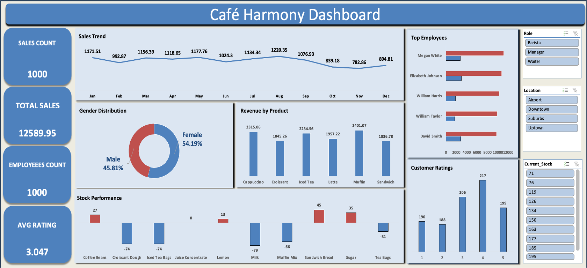

Business Intelligence Analytics
Client: Café Harmony | Industry: Food & Beverage / Hospitality | Tool: Microsoft Excel
An interactive Excel dashboard built to improve operational visibility across a fast-growing multi-location café chain — covering sales, inventory, employee performance, and customer satisfaction.

1. Business Problem
Café Harmony had expanded quickly across multiple city locations, but growth had outpaced the company's ability to monitor operations effectively. Stock was running out unpredictably, sales performance varied by location without a clear explanation, and employee productivity was difficult to track consistently. Customer feedback was being collected but never systematically analysed.
Management needed a centralised solution to answer three key questions:
- Which products and locations are driving — or dragging — revenue?
- Where are inventory gaps creating operational risk?
- How are employees performing against targets, and what is driving customer satisfaction?
Without answers to these questions, Café Harmony could not make informed decisions about staffing, stock ordering, or menu strategy.
2. Data Overview
- Sales Data: Sales ID, Product, Quantity, Price, Location, Sale Date, Total Sales
- Customer Data: Customer ID, Age, Gender, Preferred Items
- Employee Data: Employee ID, Role, Location, Sales Target vs Achieved
- Stock Data: Item Name, Current Stock, Ideal Stock, Stock Status
- Feedback Data: Rating, Sentiment, Customer Comments
GDPR Note: All datasets were treated as anonymised and structured. No personal identifiers were used in outputs. Customer and employee data was aggregated in line with GDPR data minimisation principles.
3. Data Cleaning & Preparation
What Was Removed
- Duplicate transaction entries identified across the sales dataset
- Incomplete rows with missing product or location fields
What Was Transformed
- Date fields standardised to a consistent format for time-series analysis
- Stock status categorised into flags: In Stock, Low Stock, Out of Stock
- Employee performance data normalised against individual targets for fair comparison
New Calculated Fields Created
- Sales Achievement Rate: Actual sales ÷ target, expressed as a percentage
- Stock Gap: Ideal stock − current stock, used to flag replenishment priorities
- Average Customer Rating: Mean score per location and product category
4. Data Analysis
Key KPIs Tracked
- Total Sales & Sales Volume
- Average Customer Rating by location and product
- Employee Sales Achievement Rate
- Inventory Stock Health (In Stock / Low / Out of Stock breakdown)
Key Trends & Patterns
- Monthly sales reveal clear seasonal demand peaks, suggesting opportunities for targeted promotions during high-traffic periods.
- Muffins, Cappuccino, and Iced Tea consistently generated the highest revenue across locations.
- Several stock items were repeatedly running below ideal levels — a pattern indicating systemic under-ordering rather than one-off incidents.
- Employee performance varied significantly by location, pointing to inconsistencies in management support or staff capacity.
Insights
- Seasonal demand is predictable and actionable. Sales peaks align consistently with specific months, giving management a reliable basis for pre-emptive promotional planning and staffing adjustments.
- Stockout risk is concentrated in a small number of high-demand items. Addressing replenishment thresholds for these items specifically would eliminate the majority of stock risk without a full inventory overhaul.
- Employee performance gaps are location-specific, not individual. The pattern suggests certain locations may lack operational support — a structural issue rather than a people issue.
5. Recommendations
- Introduce automated stock alerts for items falling below ideal thresholds, prioritising the top five most frequently depleted products.
- Develop a seasonal promotions calendar based on identified demand peaks to maximise revenue during high-footfall periods.
- Implement location-level performance reviews to investigate and address the root causes of underperformance at specific branches.
- Use customer rating trends by product to guide menu refinement — doubling down on top-rated items and reviewing consistently low-rated ones.
6. Limitations
- The dataset is drawn from a simulated environment. Real-world deployment would require validation against live transactional data.
- Customer feedback volume was not recorded — high ratings from a small number of responses carry less weight than the same ratings from a larger sample.
- Employee data does not account for tenure or contract type, which may partially explain performance variation across locations.
- External factors such as local competition, foot traffic, and weather were not available and could not be controlled for in the analysis.
Business Impact
The dashboard gives Café Harmony's management team a single, real-time view of operations across all locations. Proactive inventory tracking reduces stockout risk. Sales trend visibility enables smarter planning. Employee performance data creates accountability that was not previously possible. The business now has the analytical infrastructure to grow without losing operational control.
Skills Demonstrated
Data Cleaning • Excel Functions (XLOOKUP) • Pivot Tables • KPI Design • Slicers • Dashboard Design • Business Analytics & Storytelling